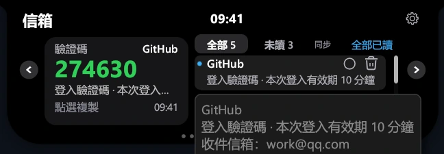
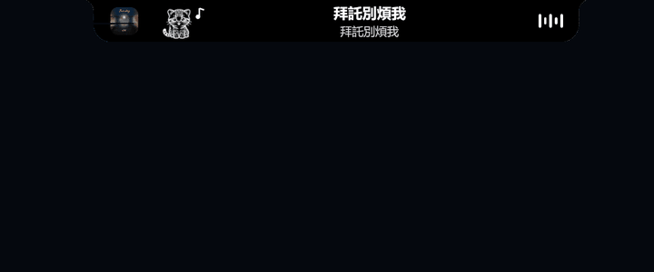

SHAPE · 01
形態自由
劉海、膠囊與四向停靠，拖曳有拿起與吸附。
SHAPE · 01
形態自由
貼齊上緣的劉海或離邊一點的膠囊都能選，上下左右四向停靠；拖曳時有拿起、跟手、吸附與落位動效，多螢幕與縮放比例也對得上，不會停在螢幕外。
移開或點外面即收起KUDAO DESKTOP DYNAMIC ISLAND · 鬼島 Kuidao 桌面靈動島 · 繁體台灣版
還是你每天都會看一眼的資訊層。
通知、天氣、行程、音樂與 AI 額度收進螢幕上緣的一小條，
抬眼就看得到，不必為了看一句話切走整個視窗。
九件事，收進同一條島
劉海、膠囊與四向停靠，拖曳有拿起與吸附。
貼齊上緣的劉海或離邊一點的膠囊都能選，上下左右四向停靠；拖曳時有拿起、跟手、吸附與落位動效，多螢幕與縮放比例也對得上，不會停在螢幕外。
移開或點外面即收起LINE、手機連結、Messenger、Threads、Facebook、Instagram 集中顯示。
LINE、手機連結、Instagram、Threads、Facebook、Messenger 與系統通知集中到島上，頭像與來源一眼分辨；圖示右上累計未讀則數，點一下直接回到發出通知的桌面程式，不用自己找是哪一個視窗。
移開或點外面即收起播放、進度、音量與同步歌詞同一條排開。
走系統媒體控制，播放、暫停、切歌、獨立音量與進度跳轉都在島上；有歌詞就同步顯示，KKBOX、YouTube 與 Spotify 都能查，台語歌與 MV 標題會自動拆成歌名與歌手再比對，沒在聽就自動讓位給其他資訊。
移開或點外面即收起當地實況、七日預報與下一個行程。
目前天氣、體感、濕度、風速、日出日落與七日高低溫一起收好；行事曆事件一併收進來，下一個會議還有多久、今天剩幾件事，抬眼就知道，不必再開行事曆。
移開或點外面即收起多家服務剩餘額度，常駐顯示重點數字。
Kimi、Claude、Gemini、Grok、DeepSeek、GLM 與中轉站額度集中一覽，常駐時只留最重要的數字；按需啟停背景更新，不用逐個開網頁確認還能不能用。
移開或點外面即收起驗證碼放大、未讀信件與寄件來源。
接上 Gmail、Outlook、Yahoo 或自訂 IMAP 後，驗證碼會單獨放大成大字，點一下就能複製；新信會點亮島上鈴鐺，IMAP 斷線也會用未讀數補回來，不會漏掉最後一封。
移開或點外面即收起八個啟動器的本機遊戲、最後遊玩與容量，一鍵重新掃描。
只讀取本機啟動器留下的 manifest、卸載登錄資料與安裝資料夾，列出已安裝遊戲、最後遊玩時間與容量，每一列都抓應用程式自己的圖示；按一下圖示或「啟動」會用對應啟動器協定或本機執行檔開啟。按「重新掃描」更新清單；按「清除掃描」只清空本次結果與數量，不會解除安裝、刪除遊戲，也不會動到已移除的捷徑清單。長按圖示可把捷徑移除，按「顯示全部」恢復；不在背景登入、不上傳收藏庫，也不定時掃描。
移開或點外面即收起關於頁只留最新一筆，版本、時間與說明一次看清。
每次成功取得最新 Release，關於頁版本卡下方的更新內容資料庫會整份覆寫，只保留這一筆版本、時間與說明，不累積上一筆。啟動約 5 秒先檢查一次，之後每 2 小時與手動檢查都會刷新；連線失敗時保留目前這一筆，不會長出舊資料。
移開或點外面即收起設定、登入資料與紀錄留在本機，不經中繼伺服器。
設定、憑證與紀錄都存在你自己的電腦；天氣、額度、信箱直接用你填的設定連到該服務，不經過本專案的中繼伺服器。安裝版可從 Windows「新增或移除程式」解除安裝；安裝檔固定為 Kuidao-Setup-TW-x64.exe，下載位置不會因版本變動。
移開或點外面即收起不是再開一個視窗，而是把每天都會看的幾件事，收進一條不會擋住工作的位置。收起時只留時間與天氣，需要時才展開。



實機畫面 · 外觀、信箱與天氣
從經典、奶油、毛玻璃到多款懸浮漸層，島體和石虎都留在原位，只換底色與光線。這段演示把桌布拿掉、換成官網深色底，直接看主題切換時的樣子。

主題演示 · 只換島體與吉祥物的底色和光線，背景為深色示意
註：畫面中的時間會依系統時間即時變動，主題演示只固定切換節奏與版面。
介面文字逐條改寫成台灣用法，再補上字型、時間格式、地名與打包方式，讓它在台灣的電腦上像原生軟體。
設定、檔案、資料夾、記憶體、螢幕、系統匣、捷徑、行事曆，照台灣人實際講法，不是逐字轉換。
天氣沿用原作者的地名與時間顯示方式，只把用語改成台灣習慣，行政區顯示已依台灣版調整；時鐘可切 12／24 小時與秒數。
奶油、毛玻璃、懸浮與漸層主題；吉祥物以類似原作者的呈現方式，目前皆以台灣石虎代表，所有主題共用同一組石虎影格，漸層只換底色。
提供 Windows 安裝包，安裝後可從「設定 → 應用程式」或「新增或移除程式」解除安裝；不另外常駐背景服務，也不佔用多餘資源。
授權 鬼島 Kuidao 桌面靈動島台灣版衍生自 Renly1994／xiaotang-daozai（Windows 桌面靈動島），原專案以 MIT 授權釋出；依授權保留原作者版權聲明與條文，LICENSE 隨程式附上。
安裝包的第一個版本為 0.6.00，採 Windows 安裝形式。
安裝檔固定為 Kuidao-Setup-TW-x64.exe，檔名不帶版本號；下載後開啟安裝器，第一次啟動才會下載主程式。
後續版本與功能會透過程式內檢查更新調整。
SHA-256：7db7dc70c169def56f888f76f40085b456e2e87016df8da576b979ab0b60725c
若先前下載過舊檔，請重新下載；安裝器若顯示完整性檢查失敗，代表檔案被截斷或瀏覽器拿到舊快取。
關於安裝、資料與支援
安裝包的第一個版本 0.6.00 已在本頁開放下載，檔名固定為 Kuidao-Setup-TW-x64.exe；後續版本會透過程式內檢查更新提供。
功能面沿用上游開源專案，差異在語言與在地化：全繁體台灣用語、地名與時間格式、外觀與品牌識別，以及 Windows 安裝與移除流程。程式架構與模組邏輯沒有重寫。
在「關於」頁版本資訊下方，只保留最新一筆更新說明。每次成功取得最新 Release 後整份覆寫本機 update-notes.json，不會累積上一筆；啟動約 5 秒先檢查，之後每 2 小時與手動檢查都會刷新，卡片會顯示版本與取得時間。
不會。清除只清空本次掃描結果與數量，不會解除安裝、刪除遊戲，也不會動到「已移除捷徑」清單；按「重新掃描本機遊戲」就能重新列出已安裝項目。
Steam、Riot、Epic、GOG、Ubisoft、EA、Battle.net 與 Amazon 八個來源。只看本機啟動器留下的 manifest、卸載登錄與安裝資料夾，不會登入啟動器、不上傳收藏庫，也不會背景掃描；沒抓到清單時按「重新掃描」即可。
安裝檔固定命名為 Kuidao-Setup-TW-x64.exe，官網下載連結與 Release 固定資產都不會因版本變動；第一次開啟安裝器才會下載當時的主程式，並顯示下載進度。
安裝時需要系統管理員權限，因為安裝器會寫入程式目錄與「新增或移除程式」資訊；日常開啟與使用不需要管理員權限。
設定、憑證與紀錄都存在你自己的電腦裡；天氣、額度、信箱這類模組是直接用你填的設定連到該服務，不經過本專案的中繼伺服器。
音樂走系統媒體控制，多數播放器都能接；訊息以 LINE、Instagram、Threads、Facebook 與系統通知為主；AI 額度與信箱則依你設定的服務而定。
島體貼齊螢幕上緣、系統匣、通知與視窗喚起都依賴 Windows 的桌面行為；目前先把 Windows 10／11 64 位元版本做好，不另外承諾其他平台。
台灣版固定以石虎代表，採用類似原作者的單一角色影格呈現方式，設定只保留這一種形象；尾巴、耳朵與眨眼會自己動，待機、開心、擔心、專注與沉睡各有不同節奏。